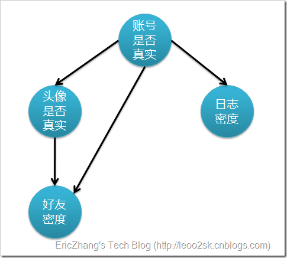

笔者的算法demo代码: https://github.com/C0deFxxker/Machine-learning/blob/master/bayes/test.py
一、分类问题概述
对于分类问题，其实谁都不会陌生，说我们每个人每天都在执行分类操作一点都不夸张，只是我们没有意识到罢了。例如，当你看到一个陌生人，你的脑子下意识判断TA是男是女；你可能经常会走在路上对身旁的朋友说“这个人一看就很有钱、那边有个非主流”之类的话，其实这就是一种分类操作。
从数学角度来说，分类问题可做如下定义：
已知集合：$C={y_1,y_2,\cdots,y_n}$ 和 $I={x_1,x_2,\cdots,x_n}$，确定映射规则$y=f(x)$，使得任意$x_i \in I$有且仅有$y_j \in C$一个使得$y_j=f(x_i)$成立。（不考虑模糊数学里的模糊集情况）
其中C叫做类别集合，其中每一个元素是一个类别，而I叫做项集合，其中每一个元素是一个待分类项，f叫做分类器。分类算法的任务就是构造分类器f。
这里要着重强调，分类问题往往采用经验性方法构造映射规则，即一般情况下的分类问题缺少足够的信息来构造100%正确的映射规则，而是通过对经验数据的学习从而实现一定概率意义上正确的分类，因此所训练出的分类器并不是一定能将每个待分类项准确映射到其分类，分类器的质量与分类器构造方法、待分类数据的特性以及训练样本数量等诸多因素有关。
例如，医生对病人进行诊断就是一个典型的分类过程，任何一个医生都无法直接看到病人的病情，只能观察病人表现出的症状和各种化验检测数据来推断病情，这时医生就好比一个分类器，而这个医生诊断的准确率，与他当初受到的教育方式（构造方法）、病人的症状是否突出（待分类数据的特性）以及医生的经验多少（训练样本数量）都有密切关系。
二、 预备知识
2.1 条件概率公式
设A,B两个事件，P(B)>0，则在事件B发生条件下，事件A发生的条件概率为：
实例：盒子里面有黑色和白色两种颜色的模具，它们的比例是6:4(黑:白)。黑色模具全都是立方体，白色模具有一半是立方体一半是球体(5:5)。
假设摸到白球的事件为A，摸到黑球的事件为$\bar{A}$，摸到立方体模具的事件为B，摸到球体模具的事件为$\bar{B}$。
假设我伸手到盒子里摸到了一个立方体模具(事件B)，那么这个模具是白色(事件A)的概率就是$P(A|B)$。
反过来，我们假设我已经知道摸到的模具是白色(事件A)，那么这个模具是球体(事件$\bar{B}$)的概率就是$P(\bar{B}|A)$
2.2 乘法公式
由条件概率公式得乘法公式：
推广：对于任何正数$n \ge 2$，当$P(A_1 A_2 \cdots A_{n-1}) > 0$时，有
2.3 全概率公式
如果事件组 $B_1,B_2,\cdots, B_n$ 满足
- $B_i \cap B_j = \emptyset$, $i \ne j$ 且 $P(B_i)>0$ 且 $i,j=1,2,\cdots,n$
- $B_1 \cup B_2 \cup \cdots \cup B_n = \Omega$，则称事件组 $B_1,B_2, \cdots ,B_n$ 是样本空间$\Omega$的一个划分
设 $B_1 B_2 \cdots$ 是样本空间$\Omega$的一个划分，A为任一事件，则：
上式即为全概率公式.
全概率公式的意义在于，当直接计算$P(A)$较为困难,而$P(B_i),P(A|B_i) \space\space (i=1,2,\cdots,n)$的计算较为简单时，可以利用全概率公式计算$P(A)$。思想就是，将事件A分解成几个小事件，通过求小事件的概率，然后相加从而求得事件A的概率，而将事件A进行分割的时候，不是直接对A进行分割，而是先找到样本空间$\Omega$的一个个划分$B_1,B_2,\cdots,B_n$,这样事件A就被事件$AB_1,AB_2,\cdots,AB_n$分解成了n部分，即$A=AB_1+AB_2+…+AB_n$, 每一$B_i$发生都可能导致A发生相应的概率是P(A|Bi)，由加法公式得
实例：某车间用甲、乙、丙三台机床进行生产，各台机床次品率分别为5%，4%，2%，它们各自的产品分别占总量的25%，35%，40%，将它们的产品混在一起，求任取一个产品是次品的概率。
设: 抽取一个产品是甲、乙、丙机床生产的事件分别为$A_1, A_2, A_3$，抽取到产品是次品的事件为$B$。根据全概率公式得:
2.4 贝叶斯公式
与全概率公式解决的问题相反，贝叶斯公式是建立在条件概率的基础上寻找事件发生的原因（即大事件A已经发生的条件下，分割中的小事件$B_i$的概率），设$B_1,B_2,\cdots$是样本空间$\Omega$的一个划分，则对任一事件A（P(A)>0),有
上式即为贝叶斯公式，$B_i$常被视为导致试验结果A发生的”原因“，$P(B_i)(i=1,2,\cdots,n)$表示各种原因发生的可能性大小，故称先验概率；$P(B_i|A)(i=1,2,\cdots,n)$则反映当试验产生了结果A之后，再对各种原因概率的新认识，故称后验概率。
实例：发报台分别以概率0.6和0.4发出信号“∪”和“—”。由于通信系统受到干扰，当发出信号“∪”时，收报台分别以概率0.8和0.2收到信号“∪”和“—”；又当发出信号“—”时，收报台分别以概率0.9和0.1收到信号“—”和“∪”。求当收报台收到信号“∪”时，发报台确系发出“∪”的概率。
设: 发报台发送信号”u”的事件为$A$，发送信号”-“的事件为$\bar{A}$，收报台收到信号”u”的事件为$B$。根据贝叶斯公式得：
2.5 相互独立事件
相互独立事件: 就是事件A（或B）是否发生对事件B（A）发生的概率没有影响，这样的两个事件叫做相互独立事件。所以有
根据条件概率公式可以推导出
相互独立事件的性质将会在下面”朴素贝叶斯“算法中用到。
三、朴素贝叶斯分类
朴素贝叶斯分类是一种十分简单的分类算法，叫它朴素贝叶斯分类是因为这种方法的思想真的很朴素，朴素贝叶斯的思想基础是这样的：对于给出的待分类项，求解在此项出现的条件下各个类别出现的概率，哪个最大，就认为此待分类项属于哪个类别。通俗来说，就好比这么个道理，你在街上看到一个黑人，我问你你猜这哥们哪里来的，你十有八九猜非洲。为什么呢？因为黑人中非洲人的比率最高，当然人家也可能是美洲人或亚洲人，但在没有其它可用信息下，我们会选择条件概率最大的类别，这就是朴素贝叶斯的思想基础。
训练
先给出一些定义：
- 待分类数据的特征集为${X_1, X_2, \cdots, X_n}$，其中对于每个特征$X_i$有特征值$x_i^{(1)},x_i^{(2)},\cdots,x_i^{(|X_i|)}$
- 有实际类别集合为$Y={y_1, y_2, \cdots, y_m}$。那么当$Y=y_j$时， $X_i=x_i^{(c_i)} (c_i=1,2,\cdots,|X_i|)$ 的概率为$P(X_i=x_i^{(c_i)}|Y=y_j)$
- 假设所有特征是条件独立的，即满足其中 $c_i=1,2,\cdots,|X_i|$。
训练过程其实十分简单：
- 计算先验概率: $P(Y=y_j)(j=1,2,\cdots,m)$，这个值就是类别为$y_i$的样本数除以整个训练集的样本数。
- 因为我们假设所有特征是条件独立的，则只需这样计算后验概率: $P(X_i=x_i^{(c_i)}|Y=y_j)(i=1,2,\cdots,n;j=1,2,\cdots,m)$ 的值
注意：在训练集中，某个特征$X_i$取值为$x_i^{(c_i)}$的出现次数为0时，会导致$P(X_1=x_1^{(c_1)} \cap X_2=x_2^{(c_2)} \cap \cdots \cap X_n=x_n^{(c_n)} | Y=y_j)=0$。但实际中，可能只是训练集里面没有给出这样的数据，并不代表这样的事件就一定不发生，所以概率为0这个情况太绝对了，不符合实际要求。我们的解决方案是把那些出现次数为0的次数都设为1，让它的出现概率变得十分微小但也不至于是0.
测试
贝叶斯分类器的测试阶段十分简单，将传入的测试数据$X’$利用预先训练好的贝叶斯分类器计算
得到的$y’_j$就是贝叶斯分类器的预测结果。
实例：检测SNS社区中不真实账号
这个问题是这样的，对于SNS社区来说，不真实账号（使用虚假身份或用户的小号）是一个普遍存在的问题，作为SNS社区的运营商，希望可以检测出这些不真实账号，从而在一些运营分析报告中避免这些账号的干扰，亦可以加强对SNS社区的了解与监管。
如果通过纯人工检测，需要耗费大量的人力，效率也十分低下，如能引入自动检测机制，必将大大提升工作效率。这个问题说白了，就是要将社区中所有账号在真实账号和不真实账号两个类别上进行分类，下面我们一步一步实现这个过程。
首先设 C=0 表示真实账号，C=1 表示不真实账号。
1. 确定特征属性及划分
这一步要找出可以帮助我们区分真实账号与不真实账号的特征属性，在实际应用中，特征属性的数量是很多的，划分也会比较细致，但这里为了简单起见，我们用少量的特征属性以及较粗的划分，并对数据做了修改。
我们选择三个特征属性：
- $a_1$ - 日志数量/注册天数
- $a_2$ - 好友数量/注册天数
- $a_3$ - 是否使用真实头像。
在SNS社区中这三项都是可以直接从数据库里得到或计算出来的。
下面对数值型特征进行离散化：
- $a_1$ - {$a_1 \le 0.05$, $0.05 < a_1 < 0.2$, $a_1 \ge 0.2$}
- $a_2$ - {$a_2 \le 0.1$, $0.1 < a_2 < 0.8$, $a_2 \ge 0.8$}
- $a_3$ - {$a_3=0$ (不是), $a_3=1$ (是)}
2. 获取训练样本
这里使用运维人员曾经人工检测过的1万个账号作为训练样本。
3. 计算先验概率
用训练样本中真实账号和不真实账号数量分别除以一万，得到：
4. 计算后验概率
我们用表格表示每个类别条件下各个特征属性划分的频率。
| $P(a_1|C)$ | $a_1 \le 0.05$ | $0.05 < a_1 < 0.2$ | $a_1 \ge 0.2$ |
|---|---|---|---|
| C=0 | 0.3 | 0.5 | 0.2 |
| C=1 | 0.8 | 0.1 | 0.1 |
| $P(a_2|C)$ | $a_2 \le 0.1$ | $0.1 < a_2 < 0.8$ | $a_2 \ge 0.8$ |
|---|---|---|---|
| C=0 | 0.1 | 0.7 | 0.2 |
| C=1 | 0.7 | 0.2 | 0.1 |
| $P(a_3|C)$ | $a_3=0$ | $a_3=1$ |
|---|---|---|
| C=0 | 0.2 | 0.8 |
| C=1 | 0.9 | 0.1 |
5. 使用分类器进行鉴别
下面我们使用上面训练得到的分类器鉴别一个账号，这个账号的特征属性为：$X’$ = {$a_1=0.1$, $a_2=0.2$, $a_3=0$}
算得C=0的概率更大一些，所以预测分类结果为“该账号是真实账号”。
四、贝叶斯网络简介
朴素贝叶斯分类有一个限制条件，就是特征属性必须有条件独立或基本独立（实际上在现实应用中几乎不可能做到完全独立）。当这个条件成立时，朴素贝叶斯分类法的准确率是最高的，但不幸的是，现实中各个特征属性间往往并不条件独立，而是具有较强的相关性，这样就限制了朴素贝叶斯分类的能力。我们接着上一篇文章的例子，讨论贝叶斯分类中更高级、应用范围更广的一种算法——贝叶斯网络（又称贝叶斯信念网络或信念网络）。
上一篇文章我们使用朴素贝叶斯分类实现了SNS社区中不真实账号的检测。在那个解决方案中，我做了如下假设：
- 真实账号比非真实账号平均具有更大的日志密度、各大的好友密度以及更多的使用真实头像。
- 日志密度、好友密度和是否使用真实头像在账号真实性给定的条件下是独立的。
但是，上述第二条假设很可能并不成立。一般来说，好友密度除了与账号是否真实有关，还与是否有真实头像有关，因为真实的头像会吸引更多人加其为好友。因此，我们为了获取更准确的分类，可以将假设修改如下：
- 真实账号比非真实账号平均具有更大的日志密度、各大的好友密度以及更多的使用真实头像。
- 日志密度与好友密度、日志密度与是否使用真实头像在账号真实性给定的条件下是独立的。
- 使用真实头像的用户比使用非真实头像的用户平均有更大的好友密度。
上述假设更接近实际情况，但问题随之也来了，由于特征属性间存在依赖关系，使得朴素贝叶斯分类不适用了。既然这样，我去寻找另外的解决方案。下图表示特征属性之间的关联：

上图是一个有向无环图，每个节点代表一个随机变量，而有向边表示两个随机变量之间的联系，表示始节点影响终结点。不过仅有这个图的话，只能定性给出随机变量间的关系，如果要定量，还需要一些数据，这些数据就是每个节点对其直接前驱节点的条件概率，而没有前驱节点的节点则使用先验概率表示。
继续利用上述例子中的数据，我们在训练过程中已经算好了这些概率：
| P(C=0) | P(C=1) |
|---|---|
| 0.89 | 0.11 |
| $P(a_3|C)$ | $a_3=0$ | $a_3=1$ |
|---|---|---|
| C=0 | 0.2 | 0.8 |
| C=1 | 0.9 | 0.1 |
上述得知 $P(a_3 | C)$ 以及 $P(C)$ 我们就可以通过贝叶斯公式求得反向概率，如：
也就是说，在仅知道头像为假的情况下，有大约35.7%的概率此账户也为假。
贝叶斯网络的定义及性质
一个贝叶斯网络定义包括一个有向无环图（DAG）和一个条件概率表集合。DAG中每一个节点表示一个随机变量，可以是可直接观测变量或隐藏变量，而有向边表示随机变量间的条件依赖；条件概率表中的每一个元素对应DAG中唯一的节点，存储此节点对于其所有直接前驱节点的联合条件概率。
贝叶斯网络有一条极为重要的性质，就是我们断言每一个节点在其直接前驱节点的值制定后，这个节点条件独立于其所有非直接前驱前辈节点。
一般情况下，多变量非独立联合条件概率分布有如下求取公式：
而在贝叶斯网络中，由于存在前述性质，任意随机变量组合的联合条件概率分布被化简成:
其中Parent表示$x_i$的直接前驱节点的联合，概率值可以从相应条件概率表中查到。
贝叶斯网络比朴素贝叶斯更复杂，而想构造和训练出一个好的贝叶斯网络更是异常艰难。但是贝叶斯网络是模拟人的认知思维推理模式，用一组条件概率函数以及有向无环图对不确定性的因果推理关系建模，因此其具有更高的实用价值。
贝叶斯网络的构造及学习
构造与训练贝叶斯网络分为以下两步：
- 确定随机变量间的拓扑关系，形成DAG。这一步通常需要领域专家完成，而想要建立一个好的拓扑结构，通常需要不断迭代和改进才可以。
- 训练贝叶斯网络。这一步也就是要完成条件概率表的构造，如果每个随机变量的值都是可以直接观察的，像我们上面的例子，那么这一步的训练是直观的，方法类似于朴素贝叶斯分类。但是通常贝叶斯网络的中存在隐藏变量节点，那么训练方法就是比较复杂，例如使用梯度下降法。由于这些内容过于晦涩以及牵扯到较深入的数学知识，在此不再赘述，有兴趣的朋友可以查阅相关文献。
这里给出国内一本贝叶斯网络的书：《动态贝叶斯网络推理学习理论及应用》
参考资料
全概率公式、贝叶斯公式推导过程: http://www.cnblogs.com/ohshit/p/5629581.html
朴素贝叶斯、贝叶斯网络及相关实例：http://www.cnblogs.com/hexinuaa/articles/2143483.html